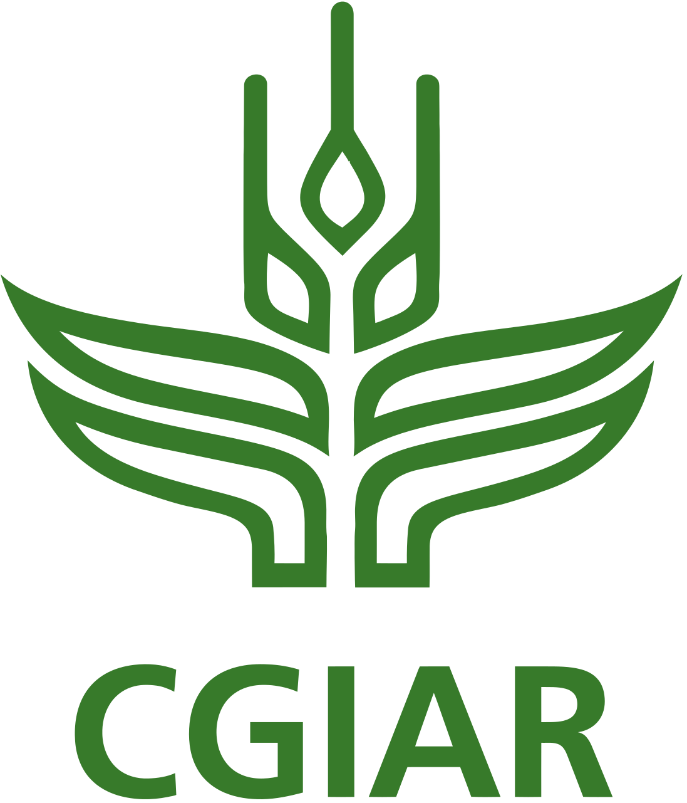
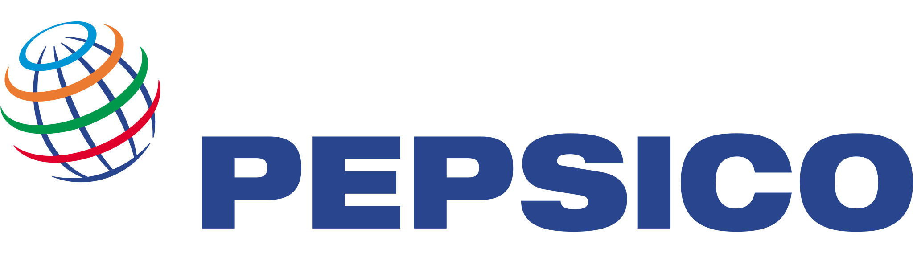

“We approved the strategy months ago. Why does everything still run the old way?”
“How do we make AI genuinely useful to our teams, beyond the pilot?”
“Our results framework satisfies donors. Why doesn’t it help us decide anything?”
The strategy is approved. What actually changes on Monday?
I make approved strategy operational inside international organisations: governance, prioritisation, and the delivery decisions that make it real.
The gap
Approval is not adoption.
Where strategy stops.
Can the strategy command the work?
Can the organisation see it moving and steer it?
The strategy isn’t the problem. The system it lands in is.
You can run these five on your own organisation before we ever speak: the Monday-Morning Test asks the same questions of what you already know.

About
Hi, I'm Ale.
Strategy doesn't fail on paper. It fails on Monday morning, when teams go back to work and nothing has actually changed for them. I've spent twenty years inside international organisations closing that gap, and I've come to love both halves of the job: building a strategy that can survive a matrix structure and an earmarked budget, and doing the unglamorous work of making one that's already been approved actually move. Give me a tangled problem and a room full of people who disagree about it, and I'm in my element.
I'm endlessly curious and a forever-student, always learning something new, always asking what we're really trying to solve. I simplify, I connect the dots, and I make change feel like something people are part of, not something happening to them.
Off the clock, I'm a mum, a cat person 🐱 (don't worry, I love dogs too), and happiest under water. I'm a certified Divemaster 🤿🐠, and the ocean is where I connect my own dots.
Brazilian–Portuguese, based in Europe · Portuguese (native), English & Spanish (fluent), French (intermediate) · MA International Development (Distinction), University of Westminster · PRINCE2
Sixty seconds
Strategy, sailing, and why you never dive alone.
Music: “Wholesome” by Kevin MacLeod (incompetech.com) · CC BY 4.0
Photo & video: Cristina Lopes
What I do
How I Help
Four ways I work with organisations, and one staged path through them, because where a piece of work should start depends on what is already in place.
Selected impact
What “made real” looks like.
Two decades of experience across funders, implementers & partners


")

")



Get in touch
Tell me what you're navigating: a strategy that won't land, a reform that's stalled, a digital investment that needs to earn its place. And if you're not yet sure where the real problem sits, that's often the first thing we'll figure out together.
Strategy, made real.
letstalk@alefurtado.org·LinkedIn
Download the product sheetPDF · 2 pages